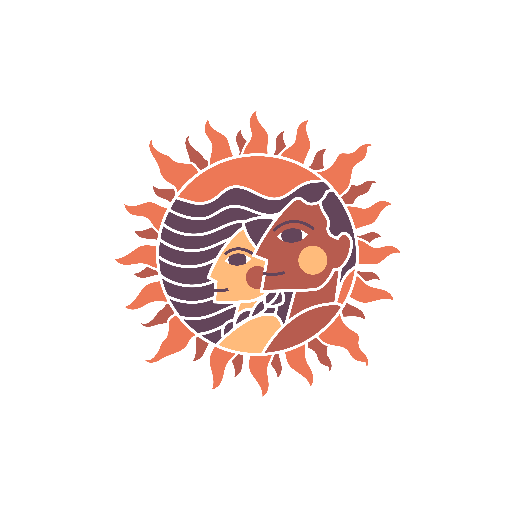

Girasoles En Marcha’s programming is temporarily on pause. The Core Team is currently fostering their own leadership growth, mental wellness, and interpersonal skills building, to improve future programming and development outcomes. This will help us gain new insight on how to move forward to better serve our Girasoles and the Community. Volunteers are currently working on the development of the community library that will be accessible to GEM Community members.
The books in our community library collection are by BIPOC authors and/or BIPOC illustrators. Our collection was carefully chosen to center narratives of people who have been historically marginalized and stories of characters that represent the vast cultural experiences of the BIPOC communities.
G.E.M community library aims to provide the necessary critical representation and social justice perspective.
G.E.M was founded in the Summer of the year two thousand fifteen by a 15-year-old teen with indigenous Zapotec ancestral roots from Solaga, Oaxaca. As a teen residing in Los Angeles, it was difficult to connect with the continuous trends and influence of the dominant cultural narrative while still identifying with her Zapotec roots. Stepping in and out of cultures left her with a vague sense of identity. She quickly learned from her mother and elders that it was necessary to center Indigenous narratives and highlight the resilience and contributions of the historically silenced people of Latin America. G.E.M came into existence as a form of resistance and reconciliation to cultivate respect for one another, preserve our cultural identities, and seed change.
Girasoles En Marcha is an Indigenous women-led organization with ancestral roots directly connected to the Zapotec, Maya, Quechua, and Inca people.
Our Mission is to empower and encourage self-identifying girls of color to co-create a community that honors and preserves all Latin American cultural identities and fosters life-long learning, diversity, and inclusion while leading in social justice.
Cultural Heritage
Community
Social Justice
Purpose
Wellness
Ethnic/Cultural awareness workshops and experiences. We believe that actively learning about Latin American history will help bring awareness and context to the lived experiences of our ancestors and the omission and lack of indigenous history within the Americas. It is important that all stories are acknowledged and all people are recognized for their contributions.
Social Justice Lit is a book club that aims to open a window to connect with the past. This opens new possibilities to choose for themselves, on how they can contribute to their communities, society and eventually the world! Nonetheless, Social Justice Lit was created to highlight the power in literacy not just at an educational level, but at an emotional level to become self-empowered, community-minded change-makers.
Our voices demand to be heard. Voz Presente is our unique writing and speaking series that aims to help our girls find their voice. We believe artistic expression will always bring forth innovative ideas. Through writing, our girls can rewrite their own narratives. Through speaker workshops, they can bloom their words into testimonies, while channeling their ancestral power.
Tesoro Verde is the journey back home to reclaim our ancestral connection to our Earth. Through hands-on organic urban farming and bonding with nature, we can collectively regenerate our environment to develop agency and autonomy. Our objective is to ground us in a sacred relationship with the earth. The Seeds we plant have ancestral roots that can regenerate our environment.
Mente Sana is a journey to mindfulness and wellness through a holistic approach. The aim is to advocate and take action in preventive mental wellness in connection to our whole being, by using music, nature, and art as a tool to gain coping skills, communicate, build resilience, and ignite social change.

"Cultural Heritage is just as much about the present and the future: about how culture is embroiled in contemporary moral controversies, and about what our cultural legacy will be."
- Stanford University
“We are nothing if we walk alone; we are everything when we walk together in step with other dignified feet.”
- Subcomandante Marcos
“You are the light of the world—like a city on a hilltop that cannot be hidden." - Matthew 5:14